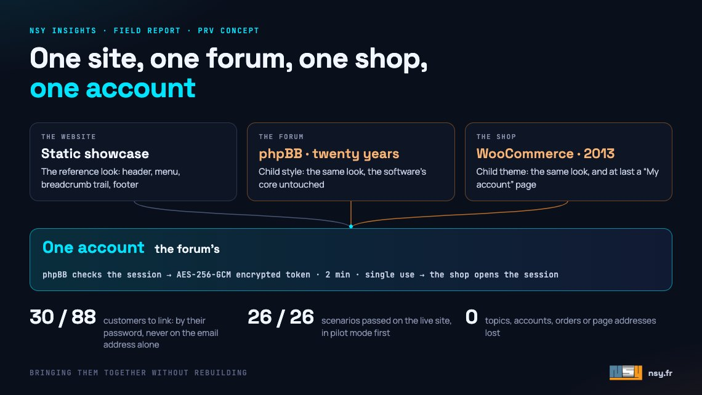

One site, one forum, one shop, one account:
bringing them together without rebuilding
For years, PRV Concept lived at three addresses: a website, a twenty-year-old phpBB forum and a WooCommerce shop opened in 2013. Each with its own look, each with its own account. PRV Concept is the association of PRV V6 enthusiasts chaired by NSY's founder, and it is our laboratory. In a case like this, the temptation is called a clean slate: migrate everything into a single tool. We did the opposite. The forum and the shop kept their engines, they took on the website's look, and a single account now opens all three. An engineering account of the project, with the two decisions that mattered: which system holds identity, and what proof we require.

Three houses, three habits
The forum wore a theme from another era, the shop the one it launched with. Moving from one to the other meant a new menu, a new visual identity and sometimes a new tab. A member had an account on the forum and, if they ordered from the shop, a second account with a second password.
For the association, three tools to maintain. For visitors, three sites that did not recognise one another.
Why not rebuild everything
Rebuilding the forum and the shop in a single tool means migrating twenty years of topics and posts, the members' accounts, the order history, and the addresses of thousands of pages that Google and the members know. A migration like that always loses something: a link, an attachment, a habit. And it replaces two proven pieces of software, maintained by their communities, with a bespoke build that would then have to be maintained alone.
PRV Concept's value is not in the software. It is in what the community has put into it. So the project set itself a simple rule: touch neither phpBB's core nor WooCommerce's, and lose nothing. At the end, the topics, posts, accounts, orders and page addresses are all the same.
One look, without touching the core
Both applications can be re-dressed: phpBB with a child style, WordPress with a child theme. It is a layer that inherits from the original and replaces only what it is asked to. The forum and the shop now carry the website's header, menu, breadcrumb trail and footer. Forum and Shop become two sections of the menu, opening in the same tab.
The benefit is not just cosmetic. A phpBB or WooCommerce security update installs as before, since none of their code has been modified; the look is maintained separately. And inherited flaws get fixed along the way: the shop, which had never had a "My account" page, now has one, with sign-in, password reset and order history.
One account: which system is the source of truth?
Linking two applications through a shared account starts with a decision: which one holds identity. Here, the forum. That is where the members live, with their groups and their rights to the association's members-only area. The shop trusts it; the reverse is not true.
The technical difficulty fits in one sentence: phpBB cannot run inside WordPress, as the two compete for the same server variables. Hence a small relay at the root of the site. It lets phpBB check the member's session itself, with all its safeguards: IP address, browser, "remember me", bans. It then hands the shop an encrypted, authenticated token (AES-256-GCM), valid for two minutes and usable once. The shop opens the member's session, or creates a customer record if there is none. Nobody types a second password, and signing out, wherever it starts, closes both.
The token cannot be read in the server logs. It carries the direction it travels in, forum to shop or the other way round, and is never accepted in the other. A replayed or tampered token is rejected.
The email address trap
To link the accounts that already existed, the obvious answer would have been the email address: same address on the forum and in the shop, same person. That is precisely what had to be avoided.
On this forum, registrations are approved by an administrator, not by a link sent to the address. The address on an account is therefore not proven by its holder. Someone could register with a shop customer's address and, through automatic matching, read their orders and delivery addresses.
Of the shop's 88 customers, 30 had a forum account with the same address. For them, the shop asks once for the password of their customer record, or for it to be reset through "lost password". That proof, and that proof alone, links the two accounts; after that, the forum is enough. A little less convenience on day one, in exchange for the certainty that nobody can take over someone else's orders.
Safeguards checked at every sign-in
The bridge's rules do not apply only on the day the accounts are linked: they are checked again at every sign-in. Only ordinary customer records can be opened through the forum, never an administrator account. One member maps to one record. And a session opened with the shop password is never closed by the forum.
Testing in production without anyone seeing
A single account can only really be tested for real: on the live server, with the real cookies and the real shop. The "Sign in with my forum account" button first lived in pilot mode: only a browser carrying a test cookie could see it.
Using test forum accounts, 26 scenarios out of 26 passed on the live site: record creation, linked sign-outs in both directions, replayed and tampered tokens rejected, linking by password, the checkout page button. The checkout flow stayed identical, and the server error log unchanged. The test records were deleted, then the switch was flipped for everyone.
And the workshop foreman follows
Bringing the three surfaces together also served the association's assistant. Père Hervé, a workshop foreman made of artificial intelligence, lives in the chat bubble of the website, the forum and the shop. He answers from the Library's digitised workshop manuals, citing the page and the folio, from forum topics with their exact titles, and from the shop's products. His rule: no source, no answer. On the forum, every one of his replies is reviewed by a human before it is published.
The single account benefits him directly: the same session tells him who he is talking to, and an authorised member can ask him about the association's members-only documents, which he will cite to nobody else. His architecture is detailed in our write-up on wiring an AI chatbot into a forum; the association introduces him itself in Père Hervé, a workshop foreman made of artificial intelligence.
What this project says about a web project
- Connect before you rebuild. The tools that already work often carry most of the value: the content, the habits, the links. Making them work together costs less and loses less than a migration.
- One source of identity. Two applications that trust each other are two front doors. Only one is the source of truth; the other consults it.
- Proof before convenience. An email address is not an identity until someone has proven it. A password asked for once is better than a hijacked account.
- Measure before and after. A check before connecting anything, an error log compared afterwards: you know what you changed, and what you did not break.
It is the method of a well-run website redesign: keep what works, rebuild the rest. The full project is described on our Portfolio page, and the association tells the members' side of the story, with video, in The site, the forum and the shop are now one.
A website, a forum or a shop each living its own life? Let’s talk — or see how a redesign that keeps what works is run.